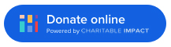

Our Project Funding office in Vancouver, BC processes any/all donations for ministries of YWAM Canada.
SPECIAL COVID19 UPDATE
*** YWAM PROJECT FUNDING is very much operating per usual from 9 – 5pm every weekday; our office may be physically closed but our team members are all working safely from their homes and aiming to provide as close to normal service as we can, and continuing to do so with our usual standards of data security and protection at all times.*** You can reach us at our usual phone number - 604.255.5262 - please leave a message if we miss you and we will reply as soon as possible. Or via email We will also do our best to extend our availability to help with urgent enquiries outside of those times. THANK YOU for your understanding and patience during this time!
PLEASE NOTE: We can process funds for full time YWAM staff and ministries who hold an active account in good standing with our office. If you are unsure about a missionary's status, please call us on 604.255.5262 or email admin@projectfunding.ca before making a donation.
DTS STUDENTS: We are unable to process donations for DTS participants anywhere in the world. This includes Canada.
There are currently four ways to give donations as outlined below.
PLEASE NOTE: All donations submitted through our Project Funding office are subject to a processing fee of 2.5%. As well, all donations given through the Canada Helps website are subject to an additional 3.5% processing fee. All donations given through Charitable Impact are subject to an additional 2.8%. Funds donated via Canada Helps or Charitable Impact usually take 7 to 14 days til they are processed in our office, and will be sent to the missionary on the next available processing day after they have been received.
1. Cheque/Money Order
Please make your cheque or money order payable to "Youth With A Mission" and include a separate note with the name of the ministry and location you wish to support. Mail to the address below.
If you are interested in giving on a monthly basis you can send in post-dated cheques or use our pre-authorized payment method below.
PLEASE NOTE: This method, along with the Pre-Authorized Payment option is generally the preferred method to use. While "credit card" giving is more convenient, the receiver loses money based on the percentage taken off that goes towards "service charges".
2. Pre-Authorized Payment (PAP)
Click here, if you are interested in downloading a pre-authorized payment agreement form and you can either mail it to the address below or scan the form and email to:
3. On-Line Giving Via Credit Card - (Two Options)
An Official Donation Receipt for Income Tax Purposes (Canadian) will be issued for all credit card donations from the respective service provider and sent to the donor’s email address. Donations are sent on to YWAM from both Charitable Impact and Canada Helps in 7 – 14 days and are sent out to missionaries and bases on the next available processing day.
A. Giving through Charitable Impact
 Charitable Impact is an organization based in Vancouver, B.C. that offers donors the ability to give using their credit card. Charitable Impact offers a processing fee option of 2.8%, in addition to the Project Funding fee of 2.5%. Their website offers Y workers the opportunity to fundraise using a ‘Giving Group’ feature. Click HERE to donate through Charitable Impact and then type in the name of the person, project or base you wish to donate to and hit the "donate now" button. If the name is not listed scroll down to “You can also give to YWAM directly”, click on Donate Now and put your comment in the message box. Please also note: Some missionaries may have a private Giving Group due to security issues. If that is the case, simply contact them directly to get a direct link to their Giving Group page. If you would like to give a desired amount “after fees”, please be sure to multiply your amount by 1.056 to cover the “fees amount”. (For example - $100.00 x 1.056 = $105.60, 2.8% off = $102.64, 2.5% off = ~$100.00) This will ensure that the person you are giving to will receive the actual desired amount.
B. Giving through CanadaHelps
CanadaHelps is an organization based in Toronto, Ontario, that offers donors the ability to give using their credit card, PayPal or Interac. CanadaHelps offers a processing fee of 3.75% for “One-Time donations” and 3.5% for “Monthly Donations”, in addition to the Project Funding fee of 2.5%.
Please read the following before clicking on the link:
The first field is “Select the Fund your Donation Will Support” and “General” is the only option. You are able to designate your donations in the field: Message/Instructions for YWAM Project Funding. Please include the name of missionary project/base in this field. Donors can give from anywhere in the world using the above payment methods. To use CanadaHelps’s services, CLICK HERE to donate through CanadaHelps (or the CanadaHelps graphic).
4. Interac e-Transfer
Log into your online banking, select e-Transfer and enter our email address of admin@projectfunding.ca Send us a separate email to let us know your name and address, the name and code of the missionary/project/base. No security question is required!
US Donations
We are now able to issue US tax receipts for any US citizens wanting to make a donation. You can do this "ONLINE" or by cheque. We are also now able to process monthly donations as well. You can do this through Mission Enablers International by clicking on this link. Please use our CODE YBC500 in the field Person/Project/Account and type in name of the worker. (Please note: this is for US citizens ONLY. They cannot process any "Canadian donations for Canadian donors through this site!)
PLEASE NOTE: We send out income tax receipts to donors monthly or annually.
Contact Info
What Is YWAM? Statement Of Faith Foundational Values FAQ's YWAM Canada News
YWAM International University Of The Nations YWAM Vancouver YWAM Organic YWAM City YWAM Associates International Mission Builders International Global Target Network Create - Emerge Global Prayer House In Touch E-zine
YWAM Dunham DTS YWAM Vancouver Snowboarders+Skiers DTS YWAM Vancouver - Cambodia Missions Trip YWAM Vancouver - Thailand Missions Trip YWAM Hockey DTS YWAM Muskoka DTS YWAM Kelowna DTS YWAM Fort McMurray DTS Pursuit Internship DTS Turner Valley DTS Mission Builders International